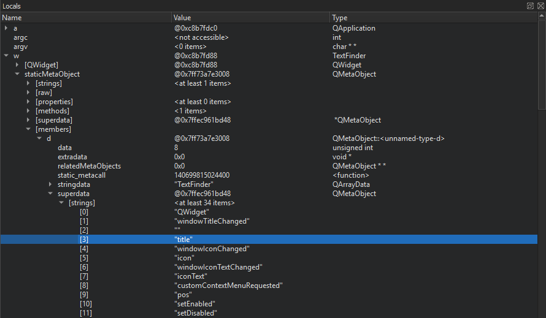

Examine complex values in Debug views
Qt Creator displays the raw information from the debuggers in a clear and concise manner to simplify the debugging process without losing the power of the debuggers.

The Locals and Expressions views show structured data, such as objects of class, struct, or union types, as a tree. To access sub-structures of the objects, expand the tree nodes. The tree shows the sub-structures in their in-memory order. To show them in alphabetic order, select Sort Members of Classes and Structs Alphabetically in the context menu.
Similarly, pointers are displayed as a tree item with a single child item representing the target of the pointer. Select Dereference Pointers Automatically in the context menu to combine the pointer and the target into a single entry that shows the name and the type of the pointer and the value of the target.
The standard representation is good enough for the examination of simple structures, but it does usually not give enough insight into more complex structures, such as QObjects or associative containers. These items are internally represented by a complex arrangement of pointers, often highly optimized, with part of the data not directly accessible through neither sub-structures nor pointers.
To show complex structures, such as QObjects or associative containers, in a clear and concise manner, Qt Creator uses Python scripts that are called debugging helpers.
In addition to the generic IDE functionality of the Stack, Locals, Expressions, Registers, and other views, Qt Creator makes debugging Qt-based applications easy. The debugger plugin understands the internal layout of several Qt classes, for example, QString, the Qt containers, and most importantly QObject (and classes derived from it), as well as most containers of the C++ Standard Library and some GCC extensions. It uses this deeper understanding to present objects of such classes in a useful way.
To change the number of array elements that are requested when expanding entries, go to Preferences > Debugging > Locals & Expressions > Default array size.
See also How To: Debug, Debugging, Debuggers, Debugger, and Debugger Views.